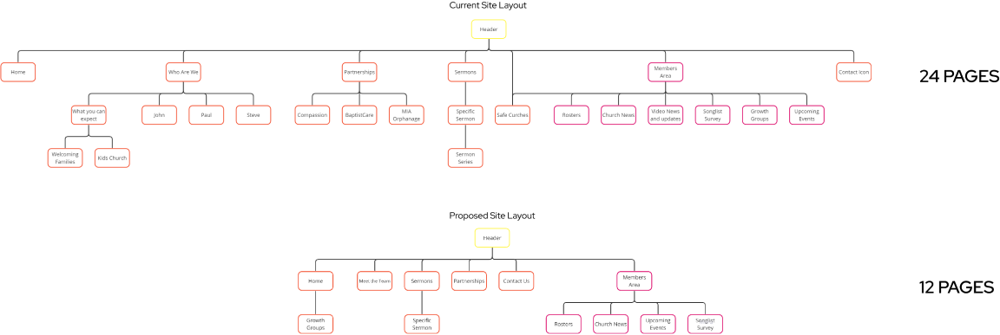
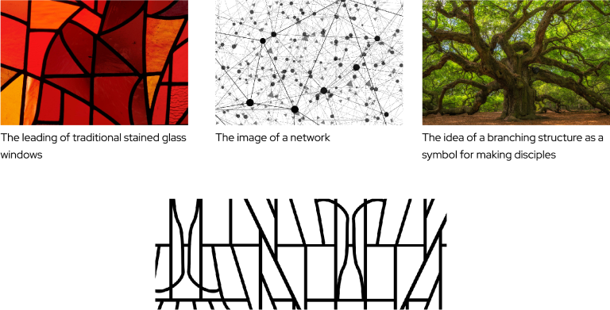

Lismore Baptist
ReturnI was approached by Lismore Baptist Church (LBC) to reimagine their visual identity with the goal of modernizing it to appeal to younger members of the community, while still respecting its historic roots and the values of its existing congregation. This re-brand would be centred around the creation of a new website hosting a robust sermon streaming platform, but would also include a logo redesign and the production of multiple other pieces of branded material.
Branding
While meeting LBC’s Senior Pastor, we identified their iconic church building as most community members’ primary point of reference for the church. The church sits at a high point in the
city and features a large outward-facing stained-glass window. Considering this, I settled on a logo design that clearly alludes to the silhouette of the church building and its window.
The Logo also considers the established Baptist symbol of the dove descending from heaven during Jesus’ baptism. And additionally, the criss-cross armature that separates the fragments of
the logo in negative space, sets the groundwork for a more abstract representation of LBC’s core vision for fostering a “diverse network of worshipping communities”.
Branding
While meeting LBC’s Senior Pastor, we identified their iconic church building as most community members’ primary point of reference for the church. The church sits at a high point in the
city and features a large outward-facing stained-glass window. Considering this, I settled on a logo design that clearly alludes to the silhouette of the church building and its window.
The Logo also considers the established Baptist symbol of the dove descending from heaven during Jesus’ baptism. And additionally, the criss-cross armature that separates the fragments of
the logo in negative space, sets the groundwork for a more abstract representation of LBC’s core vision for fostering a “diverse network of worshipping communities”.
Website
Prior to designing the church’s website I undertook a thorough assessment of their existing site. I identified the incoherent information architecture underlying it as one of its most critical UX issues. In my redesign I managed to halve the number of pages on the site while maintaining all of the existing content. I also ensured that each page was at most two clicks away from the landing page.
My first proposed design for the website used a repeating pattern modified from the branching structure of the logo. This pattern was also used subtly across the rest of the LBC’s branded material, tying the church’s visual identity together across its various touch points.

Throughout the design process, I also made sure to constantly orient my design around the original goal of advertising the church to outsiders, especially to younger members of the
community. For LBC this meant including as many real photos of the church and—more importantly—church-members as possible (at least for the outward-facing pages of the site). Photos of
people have shown time and time again to radically increase trust online, and for an organisation like this where people are everything this principle is even more pertinent
[jump to sources]. Lismore Baptist had a fairly large amount of content, so in areas where it was necessary for text to take the spotlight I still made sure to insert
photos as supporting design elements, sneaking them in behind blurs or as the background of banners.
To contrast the potentially busy pattern, bright colours and plethora of images I strictly adhered to an 8-pixel grid divided into 12 columns and limited the design language of the site
to straight lines and flat textures. I also avoided using clear horizontal blocks to divide sections of content, instead relying on good typography to indicate where sections start and
end. Regarding specific typefaces, I settled on Red Hat Display for most large text and headings; a friendly sans-serif font that closely mirrored the contours of the logomark. And for
the body text, I chose the serif Warnock Pro to ground the site with a more traditional feel, and more abstractly, to once again reflect the church’s desire to project a contemporary
image while still respecting its history.
Below is a high-res mock-up of the initial website design.

I developed the site inside of the React framework and used open-source headless CMS, Strapi, to allow LBC to manage content in the backend. The site and its backend are both currently
hosted on Render.
By far the most demanding part of coding Lismore Baptist’s site was in the creation of their new custom-built “Sermons” page, which gives visitors of the site access (via stream or
download) to their large archive of recorded sermons, many of which came with supplementary resources such as study guides or newsletters. This involved designing and coding an
audio-player component in JavaScript from the ground up, which could fetch the relevant data from Strapi and performantly deliver it to users in the front-end. The sermons system also
allows users to explore different sermon series or filter the entire database by speaker.
Revisions
The website was eventually released with some major revisions to bring it in line with LBC’s adjusted vision for their rebrand and the purpose of their site. These revisions most importantly
included rolling back the logo to their previous design and removing the Members page from the site.
In the revised design below I redesigned the Home page to reintroduce some Christian symbology. The final design evokes the shape of a cross in white which reaches up to the top of the page
from the hills in the “Who Are We” Section below (these were originally inspired by the church’s position on the crest of a hill).
Riegelsberger, J., Sasse, M. A., & McCarthy, J. D. (2003). Shiny happy people building trust?: photos on e-commerce websites and consumer trust. Proceedings of the SIGCHI conference on Human factors in computing systems.
https://dl.acm.org/doi/abs/10.1145/642611.642634
Aldiri, K., Hobbs, D., Qahwaji, R. (2008). The Human Face of E-Business: Engendering Consumer Initial Trust Through the Use of Images of Sales Personnel on E-Commerce Web Sites. International Journal of E-Business Research.
https://www.igi-global.com/article/human-face-business/1918
Cyr, D., Head, M., Larios, H., Pan, B. (2009).
Exploring Human Images in Website Design Across Cultures: A Multi-Method Approach. MIS Quarterly.
https://www.jstor.org/stable/20650308